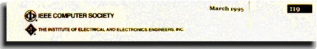

Computer Arithmetic Algorithms Israel Koren (Prentice Hall, Englewood Cliffs, NJ, 1993, 224 pp., ISBN 0-13-15952-2, $61)
In the flood of ho-hum publications on personal computers, a contribution of true computing significance is rare. But this is such a book. Conventional numeration systems are briefly introduced in the first two chapters. Next comes a discussion of simple sequential algorithms for multiplication and division, followed by several chapters on fast operations for addition, multiplication and division, plus a chapter on calculating elementary functions. The especially interesting chapters on fast operations explain pipelining, parallel and array multipliers, array dividers, and division by convergence (which requires a fast parallel multiplier). The book ends with a summary of logarithmic and residual numeration systems, which are useful in digital filtering.
There is also extensive coverage of the IEEE Std 754 on "Binary Floating-Point Arithmetic," which had an impact on floating-point unit design of contemporary machines. In addition to basic floating-point representation, the book explains terms like hidden bit, not-a-number, denormalized numbers, guard digit, and representation errors. In general, the material on errors is outstanding, since we usually forget that an actual number representing a certain quantity is more than one value-it's a value plus an error indicator, usually another value defining the error. For comparison, several other floating-point representations are included, such as those by Digital and IBM.
I highly recommend this book for computer arithmetic professionals. Its value is its summary of the most interesting aspects of arithmetic algorithms.
J.Z.
